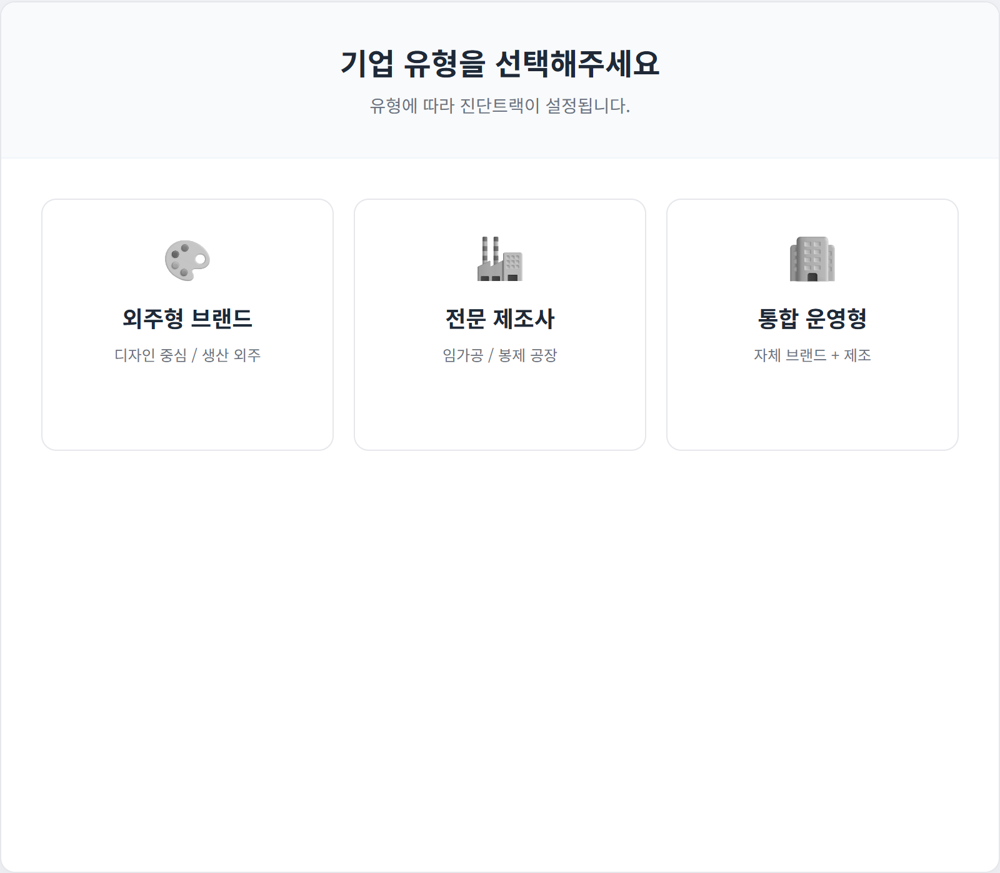
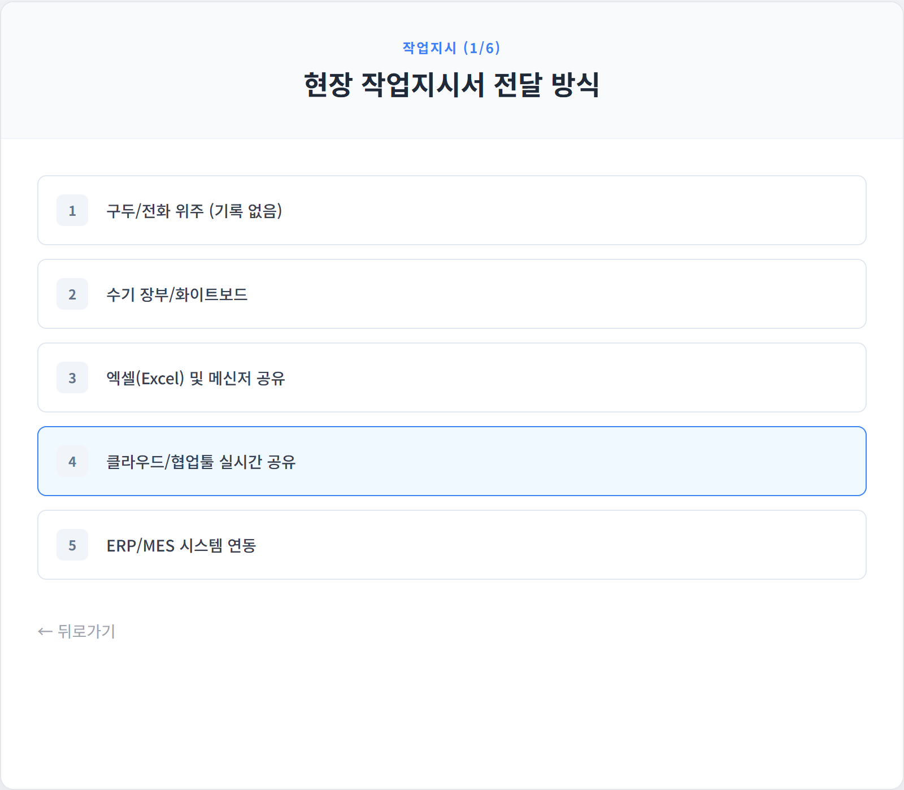
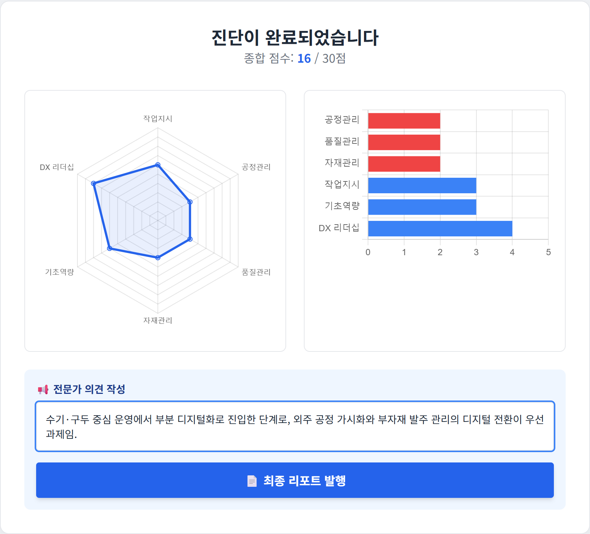

기업의 사업 구조에 따라 3개 유형으로 분류하고, 유형별로 진단 문항을 자동 분기한다. 봉제(임가공) 공장은 Track B(전문 제조사)를 기본 적용한다.
| 구분 | 유형 | 설명 |
|---|---|---|
| Track A | 외주형 브랜드 | 디자인 중심 / 생산 외주 |
| Track B | 전문 제조사 | 임가공 / 봉제 공장 (본 사업 진단 대상) |
| Track C | 통합 운영형 | 자체 브랜드 + 제조 |
봉제공장의 생산·품질·자재·경영 전반을 포괄하는 6개 핵심 영역으로 구성한다.
| 영역 | 진단 관점 | 개선과제(RFP) 연계 |
|---|---|---|
| ① 작업지시 | 작업지시 정보의 전달·기록 방식 | 디지털 작업지시서 도입 |
| ② 공정관리 | 생산 진행·진도의 확인 방식 | 모바일 공정관리 시스템 |
| ③ 품질관리 | 불량 기록·이력 관리 방식 | 품질 이력 추적 시스템 |
| ④ 자재관리 | 원부자재 수불·재고 관리 방식 | 바코드 재고관리 도입 |
| ⑤ 기초역량 | 생산계획·데이터 활용 수준 | 데이터 기초 컨설팅 |
| ⑥ DX 리더십 | 대표자의 디지털 전환 의지 | CEO DX 역량 교육 |
동일 영역이라도 기업 유형에 맞는 문항으로 자동 분기하여 측정의 적합성을 높인다.
| 영역 | Track A 외주형 브랜드 | Track B 전문 제조사(봉제) | Track C 통합 운영형 |
|---|---|---|---|
| 작업지시 | 외주처 발주서 전달 방식 | 현장 작업지시서 전달 방식 | 통합 발주/작업지시 방식 |
| 공정관리 | 외주 생산 진도 파악 | 내부 공정 진행 확인 | 전사 생산 일정 관리 |
| 품질관리 | 납품 불량 기록 방식 | 생산 불량 기록 방식 | 전사 품질 데이터 관리 |
| 자재관리 | 샘플/원단 재고 관리 | 원부자재 수불 관리 | 통합 재고 관리 |
| 기초역량 | 판매 전략 데이터 활용 | 생산 계획 데이터 활용 | 전사 의사결정 방식 |
| DX 리더십 | 대표자 의지 및 관심도 (공통) | ||
각 영역을 디지털화 성숙도에 따라 1~5점으로 평가한다. (DX 리더십은 의지 단계 척도 적용)
| 점수 | 일반 영역(작업·공정·품질·자재·기초) | DX 리더십(대표자 의지) |
|---|---|---|
| 1점 | 구두/전화 위주 (기록 없음) | 관심 없음 |
| 2점 | 수기 장부/화이트보드 | 필요성은 느끼나 계획 없음 |
| 3점 | 엑셀(Excel) 및 메신저 공유 | 관심 있음 (교육 참석) |
| 4점 | 클라우드/협업툴 실시간 공유 | 적극적 의지 (예산 배정) |
| 5점 | ERP/MES 시스템 연동 | 강력한 의지 (직접 주도) |
6개 영역 합산(30점 만점)으로 4개 등급을 자동 산정한다.
| 종합 점수 | 등급 | 의미 |
|---|---|---|
| 25 ~ 30점 | LV5 선도 | 시스템 기반 디지털 운영 정착 |
| 20 ~ 24점 | LV4 고도화 | 클라우드/협업 기반 전환 진행 |
| 15 ~ 19점 | LV3 정착 | 엑셀·메신저 등 부분 디지털화 |
| 14점 이하 | LV2 도입 | 수기·구두 중심, 디지털 도입 초기 |
| 구성 요소 | 내용 |
|---|---|
| 종합 점수·등급 | 30점 만점 합산 점수 및 LV2~LV5 등급 자동 표시 |
| 레이더(Radar) 차트 | 6대 영역 균형도를 한눈에 시각화 |
| 막대(Bar) 차트 | 영역별 점수 비교 — 강·약점 식별 |
| 전문가 의견 | 진단 전문가가 직접 작성한 종합 의견 리포트 반영 |
| 우선 개선과제(RFP) | 취약 영역 기반 개선과제 자동 제안(디지털 작업지시서·모바일 공정관리·품질 이력추적·바코드 재고·데이터 컨설팅·CEO 교육) |
| 리포트 발행 | 화면 출력 및 인쇄(PDF) 발행 — 기업별 1부 |
| 항목 | 내용 |
|---|---|
| 구동 형태 | 웹 기반(브라우저) 단일 페이지 애플리케이션 — 별도 설치 불필요 |
| 사용 환경 | 현장 노트북/태블릿에서 즉시 사용, 인터넷 브라우저로 실행 |
| 화면/스타일 | Tailwind CSS 기반 반응형 UI, 진행 스테퍼 제공 |
| 결과 시각화 | Chart.js 기반 레이더·막대 차트 자동 생성 |
| 출력 | 브라우저 인쇄 기능을 통한 PDF 리포트 발행(인쇄 전용 레이아웃 적용) |
개발된 진단 프로그램의 실제 구동 화면이다. (예시: Track B 전문 제조사 · 종합 16/30점 · LV3 정착)


